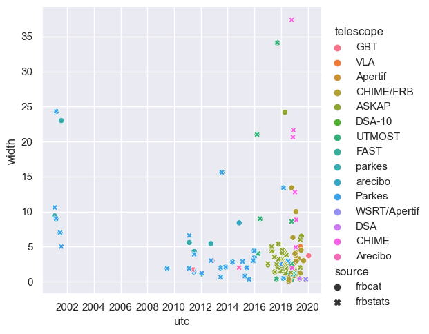
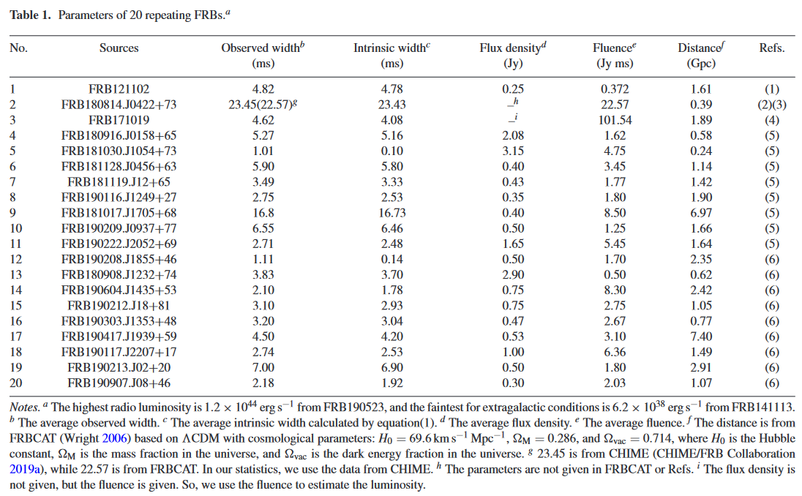
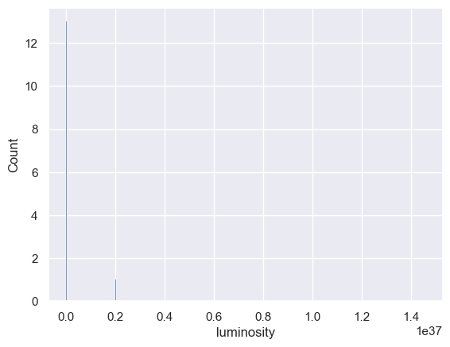

import pandas as pd
import seaborn as sns; sns.set_theme()
import matplotlib.pyplot as plt
import numpy as np
import scipy.interpolate as interpolate
Note
📌 Goal: This notebook tries to reproduce the results from https://ui.adsabs.harvard.edu/abs/2021MNRAS.500.3275C/abstract. As stated in the paper, verbatim
We investigate the statistical classifications for the two groups of samples to see if the non-repeating and repeating FRBs have different origins by employing Anderson–Darling (A–D) test and Mann–WhitneyWilcoxon (M–W–W) test
0. Getting The Data
0.1 Source
The data underlying said article are available in the references below:
- Spitler et al. (2016);
- CHIME/FRB Collaboration (2019a);
- Kumar et al. (2019);
- CHIME/FRB Collaboration (2019b);
- Fonseca et al. (2020).
Some data of FRBs are taken from the data base of FRBCAT, available at http://www.frbcat.org/.
0.1.1 Non-Repeaters
However, I have not been able to effectively filter out repeater from the whole population in the FRBCAT Database. Therefore, I joined it with FRBSTATS where the repeater population has been listed on its utc column rounded to the nearest second.
Deprecated
Using the described filters, I have been able to obtain 88 data points. It is close to the papers sample of 80 ~ 913
# Load FRBCAT Catalogue
frbcat = pd.read_csv("../data/raw/external/frbcat_20221227.csv", parse_dates=['utc']).rename(
columns={
'rop_sampling_time': 'sampling_time',
'rop_bandwidth': 'bandwidth_MHz',
'rop_centre_frequency': 'center_freq_MHz'
})
frbcat['utc'] = frbcat['utc'].round('S')
frbcat = frbcat[frbcat['rmp_width'] <= 35]
frbcat.info()<class 'pandas.core.frame.DataFrame'>
Int64Index: 107 entries, 0 to 117
Data columns (total 14 columns):
# Column Non-Null Count Dtype
--- ------ -------------- -----
0 frb_name 107 non-null object
1 utc 107 non-null datetime64[ns]
2 telescope 107 non-null object
3 rop_raj 107 non-null object
4 rop_decj 107 non-null object
5 rop_gl 107 non-null float64
6 rop_gb 107 non-null float64
7 sampling_time 106 non-null float64
8 bandwidth_MHz 107 non-null float64
9 center_freq_MHz 107 non-null float64
10 rmp_dm 107 non-null float64
11 rmp_dm_error 107 non-null float64
12 rmp_width 107 non-null float64
13 rmp_snr 104 non-null float64
dtypes: datetime64[ns](1), float64(9), object(4)
memory usage: 12.5+ KB# Load FRBSTATS catalogue and do appropriate filter
# A separate list is used because FRBCAT uses a different name
frbstats_telescope_names_available_in_frbcat = ['Parkes', 'Arecibo', 'Pushchino', 'FAST', 'DSA', 'CHIME', 'WSRT/Apertif', 'UTMOST', 'VLA', 'GBT', 'ASKAP']
frbstats_float_columns = ['l', 'b', 'frequency', 'dm', 'flux', 'width', 'fluence', 'snr', 'redshift']
repeaters_samples = pd.read_csv('../data/raw/external/FRBSTATS2022-11-23_repeaters.csv', index_col=0)
frbstats = pd.read_csv('../data/raw/external/FRBSTATS2022-11-23_population.csv',
parse_dates=['utc'],
dtype={telescope: float for telescope in frbstats_telescope_names_available_in_frbcat},
na_values=["-"]
)
frbstats['utc'].round('S')
# Label repeaters
frbstats["repeater"] = False
frbstats.loc[frbstats["frb"].isin(repeaters_samples["samples"]),"repeater"] = True
# !! Filter is deprecated
# selected_data = frbstats[
# (frbstats['repeater'] == False) &
# (frbstats["width"] <= 35) &
# (frbstats["telescope"].isin(frbstats_telescope_names_available_in_frbcat)) &
# (frbstats['telescope'] != 'CHIME') &
# (frbstats["utc"].between(frbcat["utc"].min(), frbcat["utc"].max()))
# ]
selected_data = pd.merge(frbcat[['utc', 'sampling_time', 'bandwidth_MHz', 'center_freq_MHz', 'rmp_width']], frbstats[frbstats['repeater'] == False], on='utc')
# Handle NaN values
selected_data.loc[selected_data['width'].isna(), ['width']] = selected_data['rmp_width']
selected_data.loc[selected_data['sampling_time'].isna(), ['sampling_time']] = 0
selected_data.info()<class 'pandas.core.frame.DataFrame'>
Int64Index: 84 entries, 0 to 83
Data columns (total 25 columns):
# Column Non-Null Count Dtype
--- ------ -------------- -----
0 utc 84 non-null datetime64[ns]
1 sampling_time 84 non-null float64
2 bandwidth_MHz 84 non-null float64
3 center_freq_MHz 84 non-null float64
4 rmp_width 84 non-null float64
5 frb 84 non-null object
6 mjd 84 non-null float64
7 telescope 84 non-null object
8 ra 84 non-null object
9 dec 84 non-null object
10 l 84 non-null float64
11 b 84 non-null float64
12 frequency 84 non-null float64
13 dm 84 non-null float64
14 flux 77 non-null float64
15 width 84 non-null float64
16 fluence 81 non-null float64
17 snr 82 non-null float64
18 reference 84 non-null object
19 redshift 83 non-null float64
20 redshift_measured 6 non-null float64
21 ra_error 83 non-null float64
22 dec_error 83 non-null float64
23 dm_error 82 non-null float64
24 repeater 84 non-null bool
dtypes: bool(1), datetime64[ns](1), float64(18), object(5)
memory usage: 18.5+ KBIn order the accept that both these data describe the same sample, I plotted the overlap between our selected data and the original FRBCAT data.
frbcat_ = frbcat.rename(columns={'frb_name':'frb','rop_raj': 'ra', 'rop_decj': 'dec', 'rop_gb': 'b', 'rop_gl': 'l', 'rmp_width': 'width', 'rmp_dm': 'dm', 'rmp_snr': 'snr'})
frbcat_.loc[:, ['source']] = 'frbcat'
frbstats_ = selected_data[['frb', 'utc', 'telescope', 'ra', 'dec', 'l', 'b', 'dm', 'width', 'snr']]
frbstats_.loc[:, ['source']] = 'frbstats'
frbpopulation_merged = pd.concat([frbcat_, frbstats_])
sns.relplot(data=frbpopulation_merged, x='utc', y='width', style='source', hue='telescope')<seaborn.axisgrid.FacetGrid at 0x2292bc91580>
0.1.2 Repeaters
Data on repeaters are easy to obtain. The authors are kind enough to provide table on all 20 samples used in the study.

xianghan = pd.read_csv('../data/raw/external/XiangHan2020_ensemble-repeaters.csv')| No. | Sources | Observed width (ms) | Intrinsic width (ms) | Flux density (Jy) | Fluence (Jy ms) | Distance (Gpc) | Refs. | |
|---|---|---|---|---|---|---|---|---|
| 0 | 1 | FRB121102.J000+00 | 4.82 | 4.78 | 0.25 | 0.372 | 1.61 | (1) |
| 1 | 2 | FRB180814.J0422+73 | 22.57 | 23.43 | nan | 22.57 | 0.39 | (2)(3) |
| 2 | 3 | FRB171019.J000+00 | 4.62 | 4.08 | nan | 101.54 | 1.89 | (4) |
| 3 | 4 | FRB180916.J0158+65 | 5.27 | 5.16 | 2.08 | 1.62 | 0.58 | (5) |
| 4 | 5 | FRB181030.J1054+73 | 1.01 | 0.1 | 3.15 | 4.75 | 0.24 | (5) |
| 5 | 6 | FRB181128.J0456+63 | 5.9 | 5.8 | 0.4 | 3.45 | 1.14 | (5) |
| 6 | 7 | FRB181119.J12+65 | 3.49 | 3.33 | 0.43 | 1.77 | 1.42 | (5) |
| 7 | 8 | FRB190116.J1249+27 | 2.75 | 2.53 | 0.35 | 1.8 | 1.9 | (5) |
| 8 | 9 | FRB181017.J1705+68 | 16.8 | 16.73 | 0.4 | 8.5 | 6.97 | (5) |
| 9 | 10 | FRB190209.J0937+77 | 6.55 | 6.46 | 0.5 | 1.25 | 1.66 | (5) |
| 10 | 11 | FRB190222.J2052+69 | 2.71 | 2.48 | 1.65 | 5.45 | 1.64 | (5) |
| 11 | 12 | FRB190208.J1855+46 | 1.11 | 0.14 | 0.5 | 1.7 | 2.35 | (6) |
| 12 | 13 | FRB180908.J1232+74 | 3.83 | 3.7 | 2.9 | 0.5 | 0.62 | (6) |
| 13 | 14 | FRB190604.J1435+53 | 2.1 | 1.78 | 0.75 | 8.3 | 2.42 | (6) |
| 14 | 15 | FRB190212.J18+81 | 3.1 | 2.93 | 0.75 | 2.75 | 1.05 | (6) |
| 15 | 16 | FRB190303.J1353+48 | 3.2 | 3.04 | 0.47 | 2.67 | 0.77 | (6) |
| 16 | 17 | FRB190417.J1939+59 | 4.5 | 4.2 | 0.53 | 3.1 | 7.4 | (6) |
| 17 | 18 | FRB190117.J2207+17 | 2.74 | 2.53 | 1 | 6.36 | 1.49 | (6) |
| 18 | 19 | FRB190213.J02+20 | 7 | 6.9 | 0.5 | 1.8 | 2.91 | (6) |
| 19 | 20 | FRB190907.J08+46 | 2.18 | 1.92 | 0.3 | 2.03 | 1.07 | (6) |
1.0 Preprocessing
1.1 Parameters
We first process our data to uncover these parameters:
- Pulse width
- Radio Luminosity
1.1.1 Pulse Width
Since the pulse width in the FRBCAT is the observed width, which is easily affected by dispersion, to study the pulse width more accurately, we need to introduce the intrinsic width that is estimated by equation: \[ t_i = \sqrt{t^2_\text{obs} − t^2_\text{DM} − t^2_s} \] In the above formula, \(t_i(t_\text{obs})\) is the intrinsic width (observed width), with \(t_s\) being the sampling time that depends on the instrument, and \(t_\text{DM}\) is the dispersion smearing time-scale as calculated in the following: \[ t_\text{DM} = 8.3 \times 10^{−3} \text{DM}\frac{\Delta ν_\text{MHz}}{ν^3_\text{GHz}} ms, \] where DM is the dispersion measure, \(\Delta ν_\text{MHz}\) is the channel bandwidth in the unit of MHz, and \(ν_\text{GHz}\) is the central frequency in the unit of GHz. Therefore, the pulse width in the following text represents the intrinsic width.
def dispersion_smearing_timescale(dispersion_measure, bandwidth_MHz, center_freq_GHz) -> float:
return 8.3e-6 * dispersion_measure * (bandwidth_MHz / center_freq_GHz**3)
def instrinsic_width(observed_width, sampling_time, dispersion_measure, bandwidth_MHz, center_freq_GHz) -> float:
return np.sqrt(abs((observed_width**2 - dispersion_smearing_timescale(dispersion_measure, bandwidth_MHz, center_freq_GHz)**2 - sampling_time**2)))selected_data.loc[:, 'intrinsic_width_ms'] = instrinsic_width(
selected_data['width'],
selected_data['sampling_time'],
selected_data['dm'],
selected_data['bandwidth_MHz'],
selected_data['center_freq_MHz']*0.001)frbcat.loc[:, 'intrinsic_width_ms'] = instrinsic_width(
frbcat['rmp_width'],
frbcat['sampling_time'],
frbcat['rmp_dm'],
frbcat['bandwidth_MHz'],
frbcat['center_freq_MHz']*0.001
)1.1.2 Radio Luminosity
2.0 Statistical Test
2.1 Anderson–Darling Test
An Anderson–Darling test (A-D test) is used to measure the likelihood that a sample follows a certain distribution.
xianghan['Intrinsic width (ms)'].mean(), xianghan['Intrinsic width (ms)'].std()(5.101000000000001, 5.542362122302804)from scipy.special import erf
xianghan['z_score'] = (xianghan['Intrinsic width (ms)'] - xianghan['Intrinsic width (ms)'].mean())/xianghan['Intrinsic width (ms)'].std()
xianghan['pdf'] = (1/(xianghan['Intrinsic width (ms)'].std()*np.sqrt(2*np.pi)))*np.exp(-0.5*(xianghan['z_score']**2))
sorted_pdf = xianghan.sort_values(by='Intrinsic width (ms)')['pdf']
xianghan['erf_gauss'] = erf((xianghan['z_score']/np.sqrt(2)))
xianghan['cdf'] = 0.5*(1+xianghan['erf_gauss'])
xianghan['survival_func'] = 1 - xianghan['cdf']
S_ = []
N = len(xianghan['Intrinsic width (ms)'])
for i, val in enumerate(xianghan['Intrinsic width (ms)'].sort_values(), start=1):
val_1 = ((2*i)-1)*np.log(xianghan['cdf'].sort_values()[i-1])
val_2 = ((2*N) - (2*i) + 1)*np.log(xianghan['cdf'].sort_values()[i-1])
# val = np.log(xianghan['cdf'].sort_values()[i-1]) + np.log(1-xianghan['survival_func'].sort_values(ascending=False)[i-1])
S_.append(val_1 + val_2)
coeff = 1/N
A_2 = -len(xianghan['Intrinsic width (ms)']) - coeff*sum(S_)
# sns.relplot(xianghan, x='Intrinsic width (ms)', y='survival_func', kind='line')
# sns.relplot(xianghan, x='Intrinsic width (ms)', y='cdf', kind='line')
# sns.ecdfplot(selected_data[:int(len(selected_data['intrinsic_width_ms'])/2)], x='intrinsic_width_ms')
# sns.ecdfplot(selected_data[int(len(selected_data['intrinsic_width_ms'])/2):], x='intrinsic_width_ms')
# sns.ecdfplot(frbcat, x='intrinsic_width_ms')
A_2*(1+(4/N)-(25/(N**2)))18.309025157888357xianghan['survival_func']0 0.523093
1 0.000471
2 0.573079
3 0.495753
4 0.816557
5 0.449819
6 0.625341
7 0.678634
8 0.017944
9 0.403150
10 0.681859
11 0.814635
12 0.599781
13 0.725481
14 0.652364
15 0.645003
16 0.564570
17 0.678634
18 0.372745
19 0.716997
Name: survival_func, dtype: float64cdf = sorted_pdf.cumsum()def CDF(x, y):
func = interpolate.interp1d(x, y)
cdf_at_x = list()
for i, k in enumerate(y):
if i == 0:
cdf_at_x.append(k)
else:
cdf_at_x.append(k + cdf_at_x[i-1])
return np.array(cdf_at_x)/max(cdf_at_x)
def SurvivalFunc(cdf: np.ndarray) -> np.ndarray:
return 1-cdf
cdf = CDF(xianghan['Intrinsic width (ms)'], xianghan['Intrinsic width (ms)'].sort_values())
sf = SurvivalFunc(cdf)
S_ = list()
for i, cdf_ in enumerate(cdf, start=1):
coeff = ((2*i)-1)/len(cdf)
val = np.log(cdf_) + np.log(sf[i-1])
if val == np.infty or val == -np.infty:
val = 0
S_.append(coeff*val)
-len(cdf)-sum(S_)12.235782299490147from scipy.stats import anderson, shapiro, kstest, norm
anderson(xianghan['Intrinsic width (ms)'], dist='norm')AndersonResult(statistic=2.386069262367567, critical_values=array([0.506, 0.577, 0.692, 0.807, 0.96 ]), significance_level=array([15. , 10. , 5. , 2.5, 1. ]))anderson(frbcat['intrinsic_width_ms'].dropna(), dist='norm')AndersonResult(statistic=8.80968649682626, critical_values=array([0.556, 0.634, 0.76 , 0.887, 1.055]), significance_level=array([15. , 10. , 5. , 2.5, 1. ]))from scipy.stats import mannwhitneyu
mannwhitneyu(xianghan['Intrinsic width (ms)'][:10], xianghan['Intrinsic width (ms)'][10:])MannwhitneyuResult(statistic=75.5, pvalue=0.05868668127026372)exclude = [2, 12, 20]
# 2, 19, 7 = 1.42809
# 2, 12, 20 = 1.43080
sample = xianghan[xianghan['No.'].isin(exclude) == False]
print(anderson(sample['Intrinsic width (ms)'], dist='norm'))
print(sample['Sources'])AndersonResult(statistic=1.4308038840282826, critical_values=array([0.501, 0.571, 0.685, 0.799, 0.951]), significance_level=array([15. , 10. , 5. , 2.5, 1. ]))
0 FRB121102.J000+00
2 FRB171019.J000+00
3 FRB180916.J0158+65
4 FRB181030.J1054+73
5 FRB181128.J0456+63
6 FRB181119.J12+65
7 FRB190116.J1249+27
8 FRB181017.J1705+68
9 FRB190209.J0937+77
10 FRB190222.J2052+69
12 FRB180908.J1232+74
13 FRB190604.J1435+53
14 FRB190212.J18+81
15 FRB190303.J1353+48
16 FRB190417.J1939+59
17 FRB190117.J2207+17
18 FRB190213.J02+20
Name: Sources, dtype: objecta = xianghan.rename(columns={'Intrinsic width (ms)':'intrinsic_width_ms', 'Sources': 'frb'})[['intrinsic_width_ms', 'frb']]
b = frbcat.rename(columns={'frb_name':'frb'})[['intrinsic_width_ms', 'frb']]
a['source'] = 'repeater'
b['source'] = 'non_repeater'
together = pd.concat([a,b])[['intrinsic_width_ms', 'source']]
together| intrinsic_width_ms | source | |
|---|---|---|
| 0 | 4.780000 | repeater |
| 1 | 23.430000 | repeater |
| 2 | 4.080000 | repeater |
| 3 | 5.160000 | repeater |
| 4 | 0.100000 | repeater |
| ... | ... | ... |
| 113 | 22.975652 | non_repeater |
| 114 | 6.961764 | non_repeater |
| 115 | 24.254762 | non_repeater |
| 116 | 8.993350 | non_repeater |
| 117 | 9.370747 | non_repeater |
127 rows × 2 columns
anderson(selected_data['width'], dist='norm')AndersonResult(statistic=11.225411788944001, critical_values=array([0.552, 0.628, 0.754, 0.879, 1.046]), significance_level=array([15. , 10. , 5. , 2.5, 1. ]))# Luminosity
import scipy
Omega_m = 0.315
Omega_Lambda = 0.685
H_0 = 67.4 * 1000 * 100 # cm s^-1 Mpc^-1
c = 29979245800 # cm s^-1
Hubble_distance = c / H_0 # Mpc
def comoving_distance_at_z(z): # Mpc
zp1 = 1.0 + z
h0_up = np.sqrt(1 + Omega_m / Omega_Lambda) * scipy.special.hyp2f1(
1 / 3, 1 / 2, 4 / 3, -Omega_m / Omega_Lambda
)
hz_up = (
zp1
* np.sqrt(1 + Omega_m * zp1**3 / Omega_Lambda)
* scipy.special.hyp2f1(1 / 3, 1 / 2, 4 / 3, -Omega_m * zp1**3 / Omega_Lambda)
)
h0_down = np.sqrt(Omega_Lambda + Omega_m)
hz_down = np.sqrt(Omega_Lambda + Omega_m * zp1**3)
return Hubble_distance * (hz_up / hz_down - h0_up / h0_down)
def luminosity_distance_at_z(z): # Mpc
return (1.0 + z) * comoving_distance_at_z(z)
def redshift_from_distance(distance):
return distance*H_0/c
def brightness_temperature(flux, width, frequency, redshift) -> pd.DataFrame:
return (
1.1e35 * flux
* (width * 1000) ** (-2)
* (frequency / 1000) ** (-2)
* (luminosity_distance_at_z(redshift) / 1000) ** 2
/ (1 + redshift)
)xianghan['luminosity'] = brightness_temperature(xianghan['Flux density (Jy)'], xianghan['Intrinsic width (ms)'], xianghan['Observed width (ms)'],redshift_from_distance(xianghan['Distance (Gpc)']*1000))
sample = xianghan.dropna()
sns.histplot(sample['luminosity'])<AxesSubplot: xlabel='luminosity', ylabel='Count'>
Footnotes
https://www.herta-experiment.org/frbstats/↩︎
Even with the described filters, the CHIME/FRB telescope dominates the dataset making up >500 data points while it is not that prominent in FBRCAT and also the total data points is less than 100↩︎
The paper mentioned both numbers. The lower limit of 80 is mentioned in the conclusion but the upper limit of 91 is mentioned in the abstract. So I took it as a range instead.↩︎